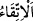

mü’min gibi olur mu?
Buradaki hemze, inkâr/reddetmek içindir. “
” sakınmak, kendini korumak demektir.
Bir kimse bir şeyi kendisine kalkan yapıp onunla korununca “
” denir. “
” terkîbi, bir şeyin kendisine zarar veren bir şeyi uzaklaştırmasına delâlet
etmektedir ki bu sözün takdîri şöyledir: “İnsanların hepsi aynı olur mu? Kıyâmet
gününde kendisini uzuvlarının en şereflisi olan yüzüyle korumaya çalışan kimse, yâni
kâfir kendini ondan emin kılan gibi midir?
et-Te’vîlâtü’n-Necmiyye’de der ki: “Yüzünü/zâtını Allah’a çevirmek sûretiyle
kıyâmet gününün kötü azâbından korunan ve azâbı kendisinden uzaklaştıran kimse,
korunmayan ve nefsine zulmeden kimse gibi midir?”
Îmânın yerine küfrü, tasdîkin yerine tekzîbi, tâatin yerine de isyânı koyan “Zâlimlere
“Kazandığınızı” dünyada iken devamlı olarak kazanmakta olduğunuz inkâr, yalanlama
ve mâsiyetlerin vebalini “tadın!” denilir.” Bu söz onlara cehennem bekçileri tarafından
söylenir.
“
(denildi)”
şeklinde
mâzî
siygasının
kullanılması,
bunun
kesinlikle
gerçekleşeceğine delâlet etmek içindir. Zamir yerine ‘zalimlere’ denilerek açık isim
zikredilmesi, onların zulmünü tescil etmek ve “Kazandığınızı tadın!” emrinin niçin
verildiğini hissettirmek içindir.
et-Te’vîlâtü’n-Necmiyye’de der ki: “Yâni o alçak fiilleriniz ve o düşük ahlâkınız
yüzünden kazandıklarınızın azâbını tadın. Yâni siz zâten bizzat azâbın içindeydiniz,
fakat gaflet uykusunun size galip gelmesinden dolayı onun tadına varamıyordunuz. İşte
şimdi öldünüz, uyandınız!”
25. Onlardan öncekiler (peygamberleri) yalanladılar da farkına varmadıkları bir
yerden onlara azap çattı.
“Onlardan” yâni Mekke kâfirlerinden “öncekiler” önce gelmiş ümmetler de tıpkı
kavminin seni yalanlaması gibi peygamberlerini “yalanladılar da farkına varmadıkları
bir yerden” başlarına, azab ve şerrin geleceğini hiç hesap etmedikleri hattâ akıllarına
bile getirmedikleri bir taraftan yâni, emniyet ve refah içinde yaşarlarken, güvendikleri
taraftan “onlara” onlardan her ümmete takdir edilmiş olan “azap çattı.” sonunda ilâhî
azab onlara geldi.
“farkına varmadıkları bir yerden” ifâdesinin mânâsı, azab onlara kendi içlerinde
emniyet hâlinde ve azabdan gâfil oldukları halde geldi, demektir. Bu ifâdenin mânâsının,
nereye savuşturacaklarını ve geri çevirecelerini bilmedikleri yerden, demek olduğu da
söylenmiştir.